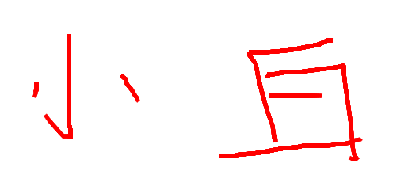

-
个人章
-
企业章
-
哈哈哈
-
个人章
-

企业章
-
公司
搬血：需调动全身精血，滚滚如雷鸣，熔炼骨文，在血液中催发出神曦，从而淬炼天地造化，滋养肉身。最高可使肉身达至十万斤极境
洞天：开辟洞天等于是夺了天地造化，不断直接吸收外界神精，补充己身。最多可有十大洞天，荒将十大洞天合一化为唯一无上洞天=遮天轮海秘境前身
化灵：重塑真我过程，与以往不同的蜕变，从肉身到精神，再到沟通外界的洞天，产生灵性，都将演变
铭纹（候）：不再彻底借鉴凶兽和猛禽的符文，能在体内铭刻自己一些符号
列阵（王）：若说铭纹境是模仿其他种族，在体内刻下符文，能初步推演法，那它就是更高层次进化。能在体内刻下各种杀阵，如先天混沌大阵和曹雨生体内的第三杀阵
尊者（人皇）：平凡修士中的极致，超脱世俗，有成神可能
神火（伪神）：点燃神火，超脱凡人，能在体内种下道种。晚年时神火可能熄灭
真一（真神）：真神灵，拥有超脱世俗的力量。真正点燃神火，神火死后才会熄灭
圣祭：特殊过渡境界，前期法力不稳定，在神火境和天神境之间变动，修炼至后期较稳定。它能直接跳过不修炼，如果修炼日后能顺风顺水。它可度神王劫
天神：能断肢再生，一滴血能崩塌山脉，它威压可盖一切低境界。它是进入帝关战场的最低资格
虚道（教主）：与道交融，以完美种子为媒介，触摸大道，能感悟天地间的妙理，第一次跟道全面接触，甚至给人以错觉，宛若化身成天地大道，触摸道的源头
斩我：全称斩我明道境，斩掉己身，明悟自己的道与法
遁一：统领一方的修士，帝关战场首领人物
至尊（无敌者）：矗立于人道绝巅仅是散发威压便令低境界抬不起头，依靠长生物质能活上数百万年或更久。对应遮天境界中的大帝。至尊巅峰拥有天帝级别的战力，如石昊在走出自己的道突破半个境界后，即是天帝级别。每个时代最强的至尊可以融合天心，后来成道的至尊不能融合天心，被称为另类成道，有的强者甚至可以战败融合天心的至尊，但一般实力不如。八世至尊依然屹立在至尊境界但却拥有着仙的战力与不死不老的仙的特点。
真仙（不朽者，长生者）：一滴血能保持数个纪元不灭，它战力不如这层次的红尘仙
仙王（不朽之王，葬王）真正长生不死，肉身不朽，元神不灭，修成仙王体能让体魄更强。极难杀死，除非用特殊方法。若有人念其真名就会被他们感知，会有异象显化。具体可划分为准仙王、十凶层次、一般仙王、绝顶仙王、仙王绝颠、巨头、无上巨头、仙王极限（如九头怪）、无上仙王极限（如十九头怪）、接近准仙帝的仙王
已知仙王：鲲鹏王、九叶剑草、蛄祖、老真龙、天下第二、赤龙、小蚂蚁、白麒麟；九天无终、轮回、仙僧王、仙金道人、边荒七王、黑暗柳神、孟天正、王长生、石毅、天子、谪仙、小石头；仙域盘王、混元、敖晟、太始、元初、与荒对峙的六仙王、阿蛮师傅、禁区之主、金色骨掌、水晶头骨、滴血眼球、斩杀洛摩的女子、金毛犼王、虎乌怪、白虎王、三尊金乌王、鲁谷、老怪物、混沌青莲、齐虞、九头怪、屠夫、卖假药；葬域霍恒、翰卓、养鸡、葬主；异域洛摩、鹤无双、无殇、蒲魔王、赤王、俞陀、安澜、紫金葫芦主人、五张法旨代表、吞天老祖、昆谛；界海瞿忡、刀王、堕落古兽、十九头怪
仙帝（仙道至尊，不朽之帝，葬帝）：它分为准仙帝和仙帝两大阶段，可炼制仙源，封印仙道高手，弹指间毁灭一界域。从古至今走上这条路的有九多成毙命。准仙帝自身就蒙蔽天机，无论过去、现在或殒落后都带着迷雾，让人难以看透，荒和灭世老人所谓的蜕变，强大而完满的躯体，不能长期保持住。想要真正圆满走向仙帝境，是非常危险的，这条路艰险到让人绝望。仙帝独有的帝之场域，能逆溯时间将敌人限制在寂静时空中，脱离不了这个点。红尘仙是大段位囊括完美所有仙的境界
已知准仙帝：脚印帝、柳神、叶凡、狠人、无始、段德、苍帝、鸿帝、羽帝、灭世老人、未来三帝
已知仙帝：尸骸仙帝、荒天帝
超越仙帝一到两个大境界：结局获知存在上苍之上，上苍流出的一滴黑血就能轻易侵蚀尸帝到死，说明黑血的主人实力是多么恐怖
已知超越仙帝：黑血主人